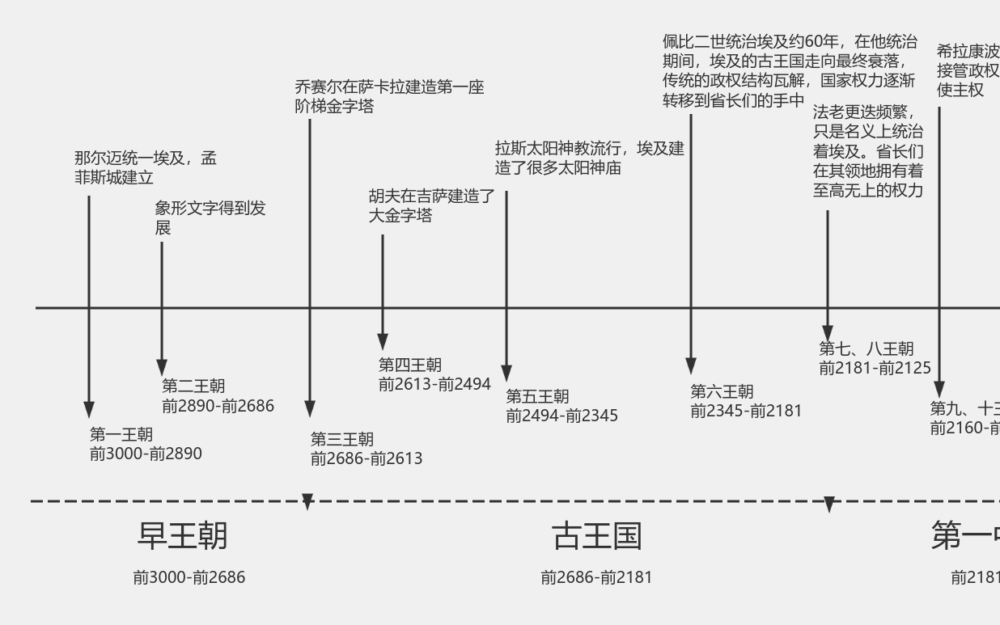

五千年文明與歷史時間軸

約西元前3100年，美尼斯統一上下埃及，建立第一王朝，開啟法老統治。
古王國時期為金字塔時代，建造了吉薩金字塔群，象徵法老的神權。
中王國與新王國時期，國力達到高峰，並出現圖坦卡門與拉美西斯二世等著名法老。
埃及逐漸衰弱，先後被亞述與波斯征服。
前332年，亞歷山大大帝征服埃及，進入希臘化時期。
克麗奧佩脫拉七世為最後一位法老，之後被羅馬帝國吞併。
埃及成為羅馬帝國的一部分，基督教逐漸普及。
7世紀阿拉伯人征服埃及，伊斯蘭文化成為主流。
1517年起，埃及納入鄂圖曼帝國統治，逐漸衰弱。
1798年拿破崙入侵，開啟近代改革。
之後英國控制埃及，1922年名義上獨立。
1952年革命後建立共和國。
納賽爾推動現代化與民族主義。
現今為中東與北非的重要國家。
古文明輝煌 → 外族統治 → 伊斯蘭化 → 殖民影響 → 現代國家